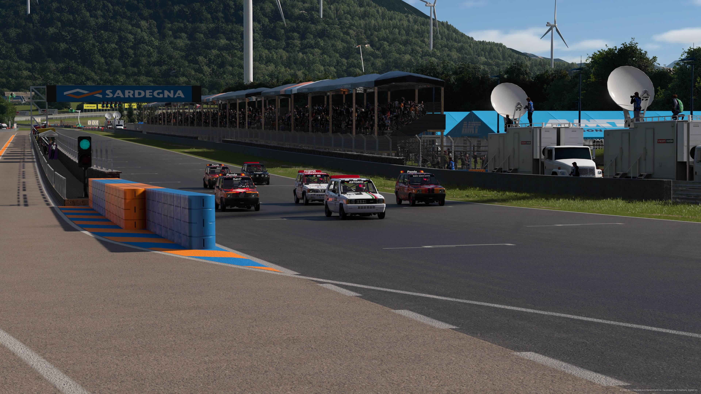
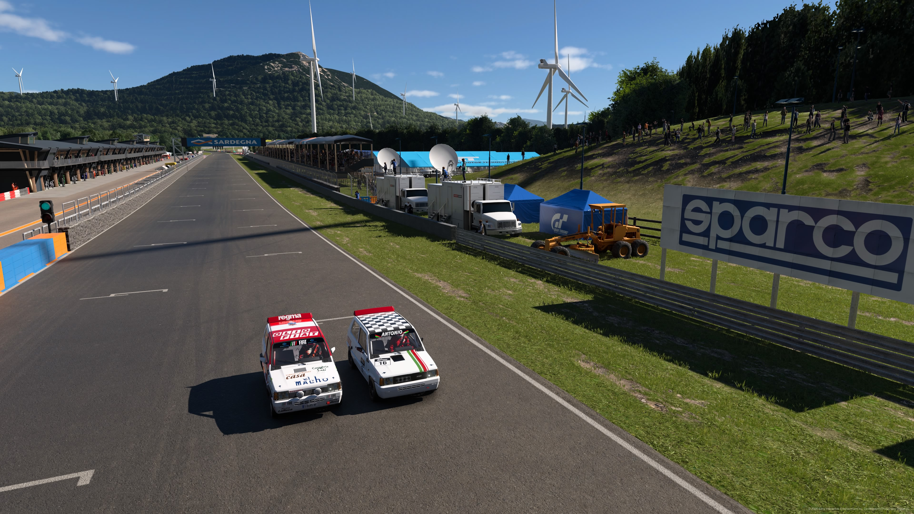
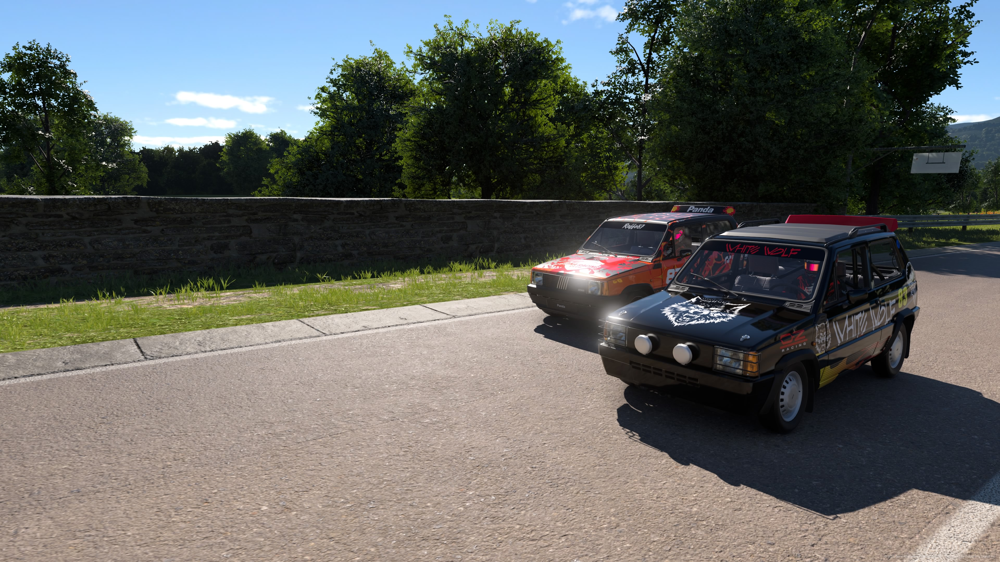
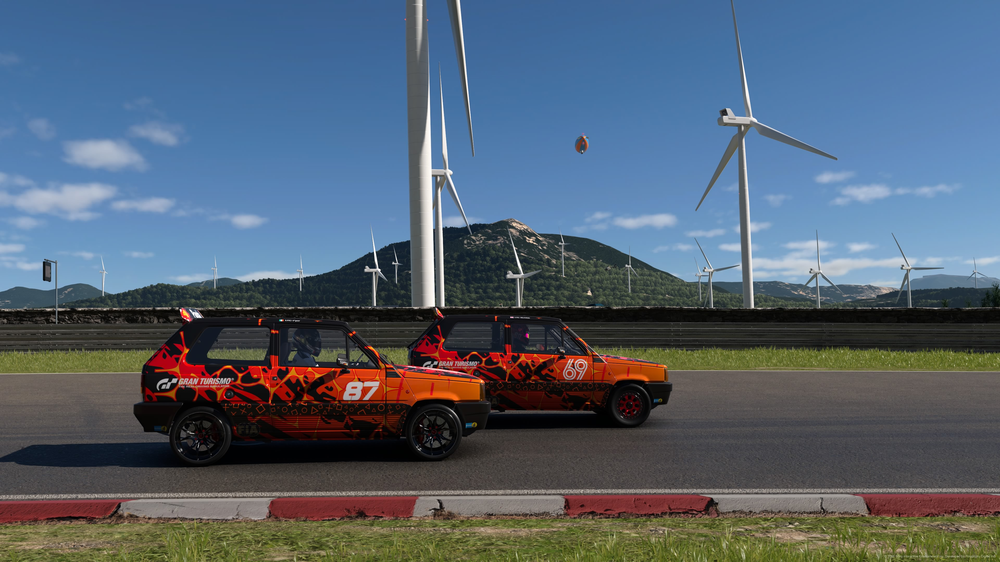
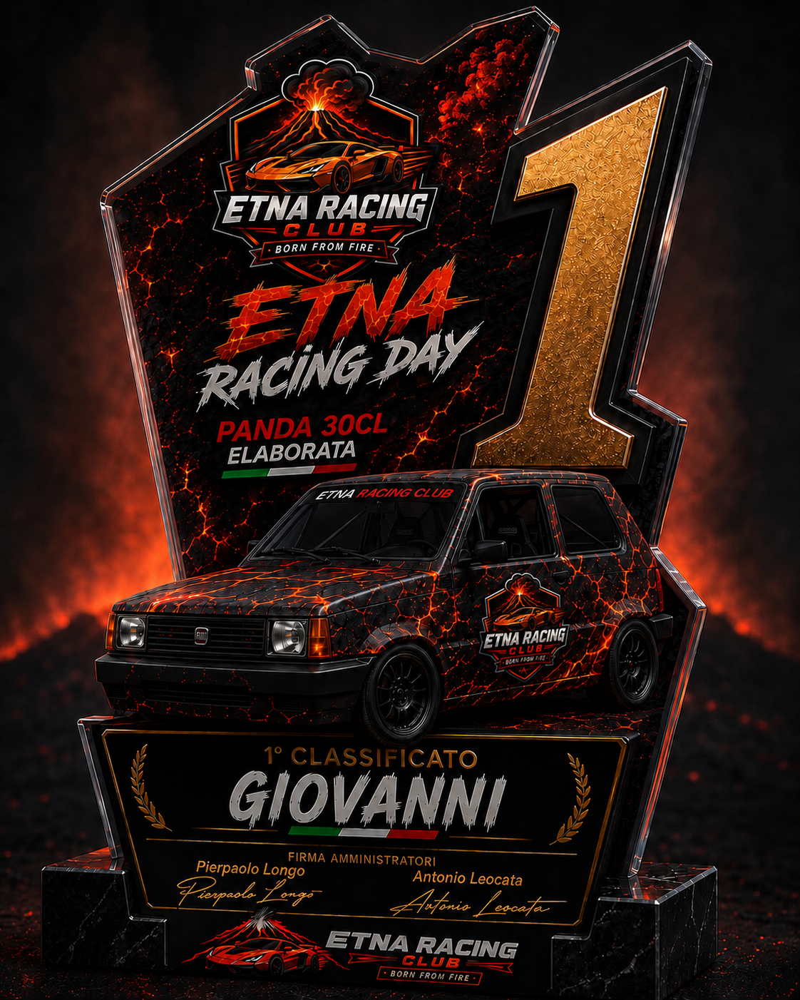
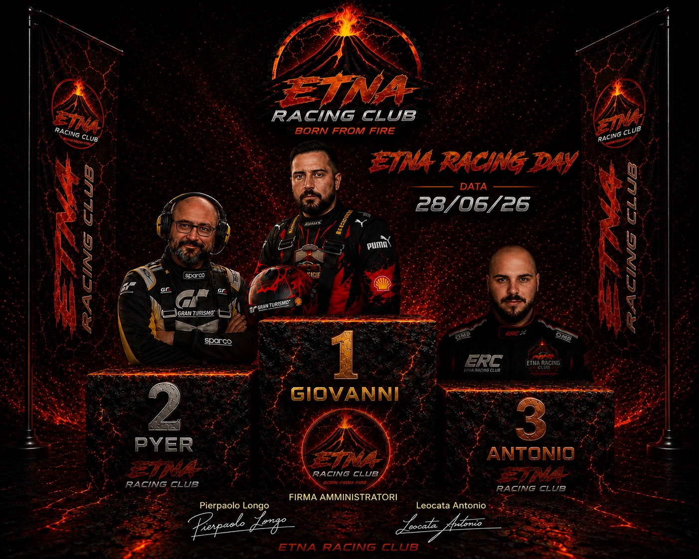
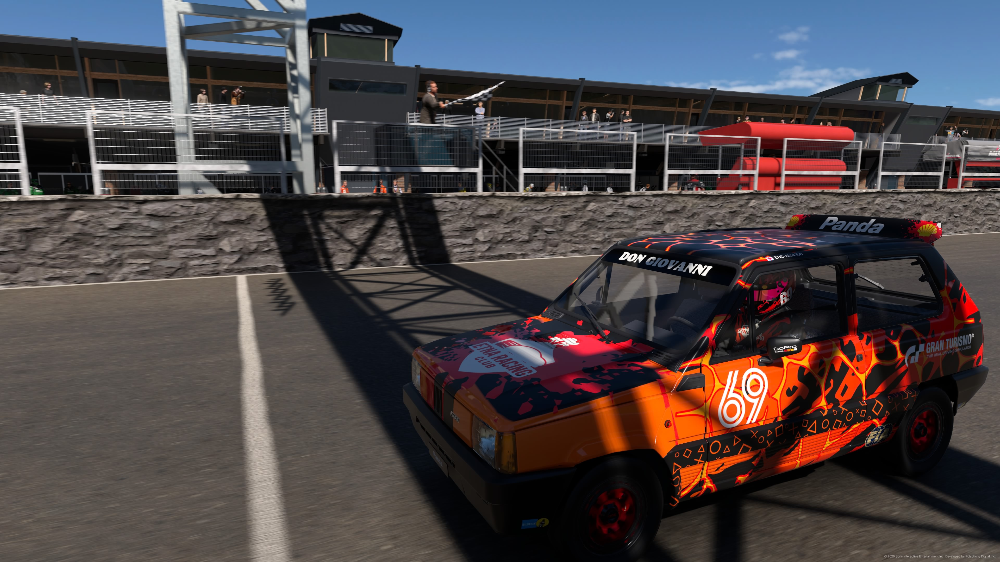

28 Giugno 2026, l’Etna Racing Club inizia la sua seconda stagione con un evento che voleva essere una festa tra amici, il luogo di questo ritrovo: Sardegna. L’auto usata: Fiat Panda. La Gara: 15 Giri
Il vostro inviato sul posto, P. Longo, ha assistito per voi a questa prima ed emozionante gara
La giornata è stata favorevole allo spettacolo, temperature piuttosto mite, cielo completamente sereno, rarissime nuvole all orizzonte, tutto lasciava presagire una gara esaltante
Le Qualifiche si sono chiuse con la Pole Position da parte di Giovanni, più veloce di Pierpaolo di poco meno di 2 decimi, a seguire Claudio, Antonio, Fabio e a chiudere Carmine che ha deciso di saltare le qualificazioni per provare delle modifiche dell ultimo minuto
Lo Start è avvenuto con uno scatto perentorio di Antonio che ha bruciato tutti, Giovanni invece veniva superato da ben 4 partecipanti ritrovandosi ad inseguire sin da subito vanificando quindi la sua ottima pole
Giovanni è comunque riuscito a recuperare subito, saltando Carmine dopo la prima curva, mentre Pierpaolo ha sfrutta verso la fine del primo giro un errore di Antonio per passare in testa; la prima curva del secondo giro è però fatale al duo Antonio-Claudio visto che Antonio va un po’ lungo e Claudio finisce per tamponarlo, ne approfitta Giovanni che passa in seconda posizione; Da lì inizia una gara a “coppie”, Pierpaolo vs Giovanni per la vittoria, Claudio vs Antonio per il terzo posto, Carmine vs Fabio per non arrivare ultimo
La prima delle 3 sfide si decide quando Pierpaolo al 4° giro arriva troppo lungo in una curva, Giovanni lo passa e vola verso la vittoria, la sfida per non arrivare ultimo invece si decide al 12° Giro quando Fabio perde il controllo dell auto e perde contatto, quella invece per il terzo posto dura praticamente tutta la gara e si decide solo al penultimo dei 15 giri quando Claudio sconta una penalità e non riesce più ad avvicinarsi ad Antonio.
Questo risultato permette a Giovanni di aggiudicarsi la sua prima vera vittoria (aveva già vinto una gara, ma come manches di un evento più grande). Gara dominata, Pole, vittoria e giro veloce
Complimenti a lui, complimenti a tutti
Dal vostro P. Longo è tutto, a voi studio






